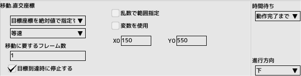

7.プレイヤーを拡張する
登場シーン、破壊シーンを作成します前回のチュートリアルで作成したプロジェクトファイルを開いておいてください
 ■元のページへ戻る
■元のページへ戻る


| 防御判定をOFFにして無敵状態にします |

|
| 自機コントロールをOFFにして操作できないようにします | |
|
画面外の下方へ移動し、そこで停止するようにします 座標は絶対座標で指定を選んでいます。画面左上が(0,0)になります 移動には最低1フレーム必要です |
 |
|
画面内へ向かって移動し、移動後停止するようにします 座標は相対座標で指定を選んでいます 移動には60フレーム（1秒間）かけています |
|
|
自機コントロールをONにして操作できるようにします この状態(無敵)で120フレーム（2秒間)待ちます |

|
| 防御判定をONにして無敵を解除します | |
| タスク「0:メイン」を停止して登場シーンを終了します |

| 自機コントロールをOFFにして操作できないようにします |

|
| ショットパネルを使って爆発キャラクタをばらまきます | |
| 登場タスクを起動します |

|
| 破壊タスクを終了します |